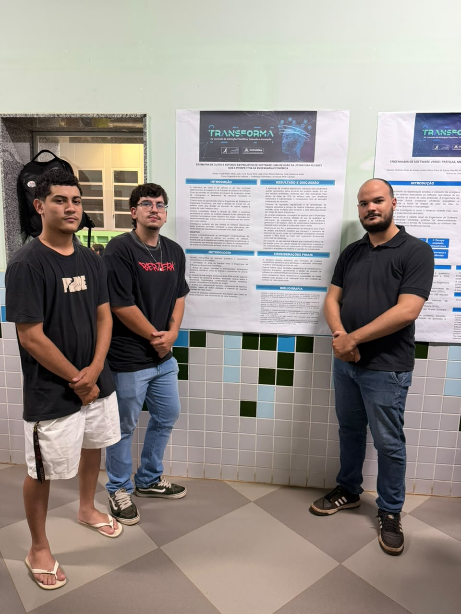
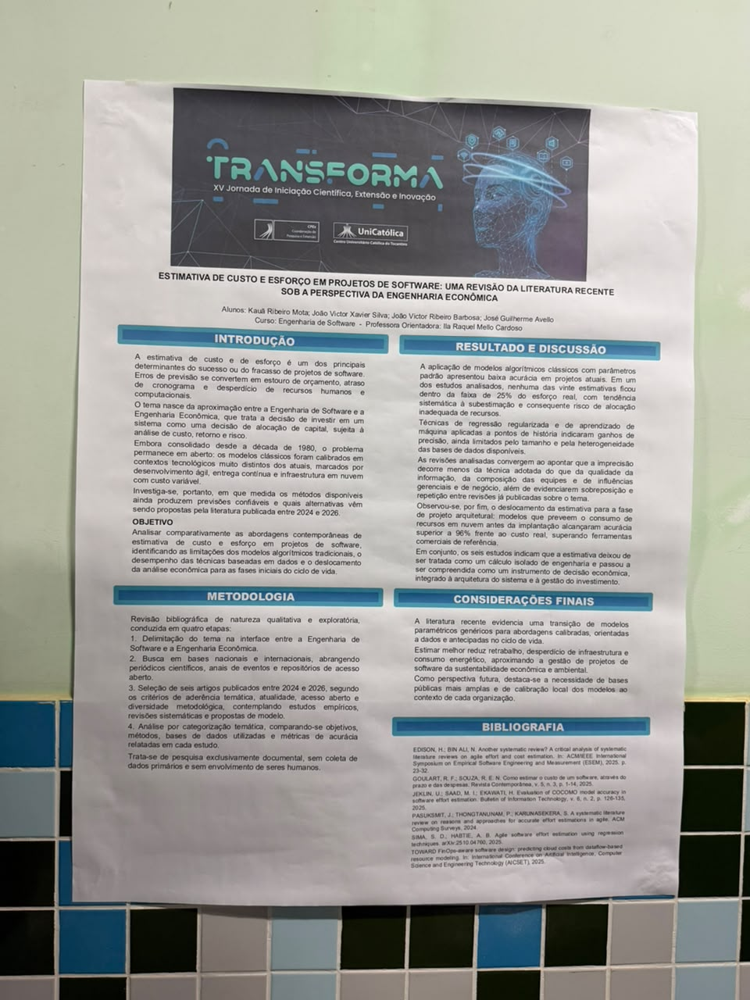
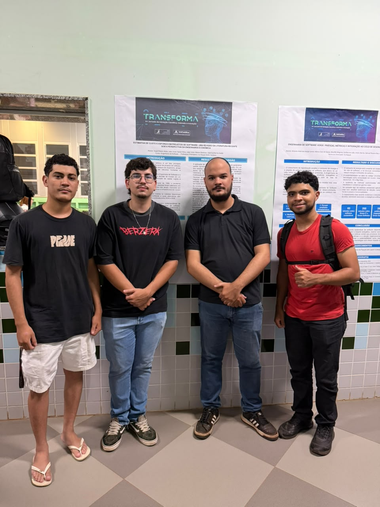

No dia 7 de outubro, foi apresentado o trabalho “Estimativa de custo e esforço em projetos de software: uma revisão da literatura recente sob a perspectiva da Engenharia Econômica”, durante a XV Jornada de Iniciação Científica, Extensão e Inovação — TRANSFORMA. A pesquisa aborda a importância de aprimorar os métodos utilizados para prever custos, prazos e esforços envolvidos no desenvolvimento de projetos de software.

Desenvolvido pelos estudantes Kauã Ribeiro Mota, João Victor Xavier Silva, João Victor Ribeiro Barbosa e José Guilherme Avello, do curso de Engenharia de Software, sob orientação da professora Raquel Mello Cardoso, o estudo busca compreender como as abordagens mais recentes podem contribuir para o planejamento e a gestão de projetos tecnológicos.
A pesquisa parte do entendimento de que estimativas imprecisas podem provocar estouros de orçamento, atrasos no cronograma e desperdício de recursos computacionais. Nesse contexto, os pesquisadores investigaram a relação entre Engenharia de Software e Engenharia Econômica, considerando a estimativa de custos como uma ferramenta importante para a tomada de decisões e a redução de riscos.

Para desenvolver o estudo, foi realizada uma revisão bibliográfica qualitativa e exploratória, com análise de artigos científicos publicados entre 2024 e 2026. O levantamento considerou diferentes métodos de estimativa, incluindo modelos algorítmicos tradicionais e abordagens baseadas em aprendizado de máquina.
Entre os resultados apresentados, a pesquisa identificou limitações nos modelos clássicos quando aplicados a projetos de software contemporâneos. O trabalho também destacou o potencial de técnicas de aprendizado de máquina e de modelos calibrados para melhorar a precisão das previsões, desde que sejam consideradas as características dos projetos e a qualidade dos dados utilizados.
Outro aspecto discutido foi a necessidade de realizar estimativas ainda nas fases iniciais do desenvolvimento, permitindo que gestores avaliem melhor os investimentos e distribuam os recursos de maneira mais eficiente. A experiência das equipes, a composição dos grupos de trabalho e a qualidade das informações também foram apontadas como fatores relevantes para a elaboração de previsões mais confiáveis.


Nas considerações finais, o estudo ressalta que estimativas mais precisas podem contribuir para reduzir retrabalho, evitar desperdícios de infraestrutura e melhorar a sustentabilidade econômica e ambiental dos projetos de software. A pesquisa também aponta a importância de desenvolver bases públicas mais amplas e modelos de estimativa calibrados para diferentes contextos organizacionais.
A apresentação reforçou a contribuição da pesquisa científica para o aperfeiçoamento das práticas de Engenharia de Software, demonstrando como a integração entre tecnologia e análise econômica pode favorecer o planejamento, a gestão de investimentos e a tomada de decisões no setor.